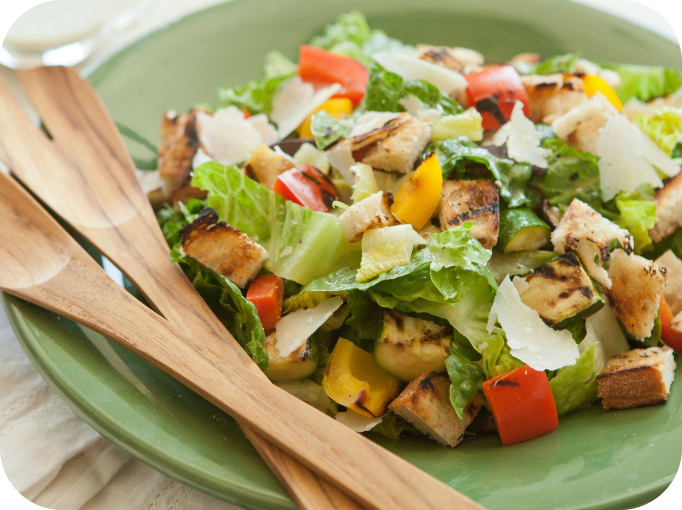
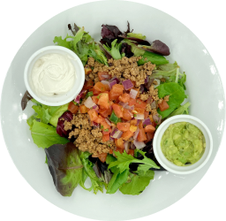
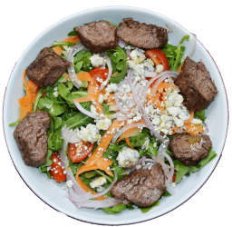
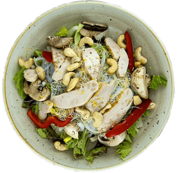

Здоровая еда вместе с Healthy Meal каждый день
Укрепляйте здоровье, употребляя в рацион только полезную пищу, и сделайте свою жизнь лучше сегодня и завтра
Войти Почему наш сайт так полезен?
В рецептах вы найдете только органические продукты, выращенные без использования синтетических химикатов
-
Разнообразие
Варианты позволят выбрать подходящий рецепт
-
Рецепты на любой вкус
Выбирайте в поиске любой понравившийся рецепт
-
100% Органично
Органические продукты питания выращиваются без использования синтетических химикатов
О сайте
Органические продукты питания выращиваются без использования синтетических химикатов, таких как искусственные пестициды и удобрения, и не содержат генетически модифицированных организмов (ГМО). Органические продукты включают свежие продукты, мясо и молочные продукты, а также обработанные пищевые продукты, такие как крекеры, напитки и замороженные блюда.
РецептыСвежие овощи каждый день
Здоровый образ жизни приносит одно удовольствие. Готовьте с удовольствием вместе с сайтом Healthy Meal и делайте свой рацион разнообразнее и полезнее каждый день.
РецептыРецепты от лучших поваров
В описании каждого рецепта вы найдете редкие советы от ведующих шеф-поваров страны и мира. Помимо правильного питания в своем рационе вы получите массу полезных рекомендаций.
- Гарантированное вкусное блюдо
- Правильное питание обеспечено
- Каждый рецепт занимает минимум времени
Редкие рецепты специально для Вас
Рецепты включают состав продуктов, изготовленных из высококачественных и 100% органических ингредиентов
-

Зеленый салат
Салат состоит из рыбы, листьев салата и заправляется вкусным оливковым маслом.
-

Салат из говядины
Салат сочетается с аппетитным ломтиком бекона и заправляется вкусным и свежим кунжутным маслом.
-

Ореховый салат
Салат включает такие ингредиенты как: перец, шампиньоны, листья салата айсберг, заправленным оливковым маслом.
Отзывы довольных пользователей
-
ИВАН ПЕТРОВ
На сайте с января 2023
В большой спешке в течение рабочего дня тружно бывает правильно питаться. Но с сайтом “Healthy Mealt” есть возможность употреблять в рацион здоровую еду и не вредить своему желудку фаст-фудом. Рекомендую этот сайт своим друзьям.
-
ИЛЬЯ ФЕДОРОВ
На сайте с марта 2023
Когда занимаешься спортом - питание играет немаловажную роль. С сайтом “Healthy Meal” нет надобности заботиться о том, что приготовить, потому что все самые полезные, а главное - вкусные рецепты уже собраны на сайте
-
ИЛЬЯ ФЕДОРОВ
На сайте с марта 2023
Когда занимаешься спортом - питание играет немаловажную роль. С сайтом “Healthy Meal” нет надобности заботиться о том, что приготовить, потому что все самые полезные, а главное - вкусные рецепты уже собраны на сайте
-
ИЛЬЯ ФЕДОРОВ
На сайте с марта 2023
Когда занимаешься спортом - питание играет немаловажную роль. С сайтом “Healthy Meal” нет надобности заботиться о том, что приготовить, потому что все самые полезные, а главное - вкусные рецепты уже собраны на сайте
-
ИЛЬЯ ФЕДОРОВ
На сайте с марта 2023
Когда занимаешься спортом - питание играет немаловажную роль. С сайтом “Healthy Meal” нет надобности заботиться о том, что приготовить, потому что все самые полезные, а главное - вкусные рецепты уже собраны на сайте
Подпишитесь чтобы получать рассылку
Введите свой email ниже, чтобы получить еженедельные рецепты и новости